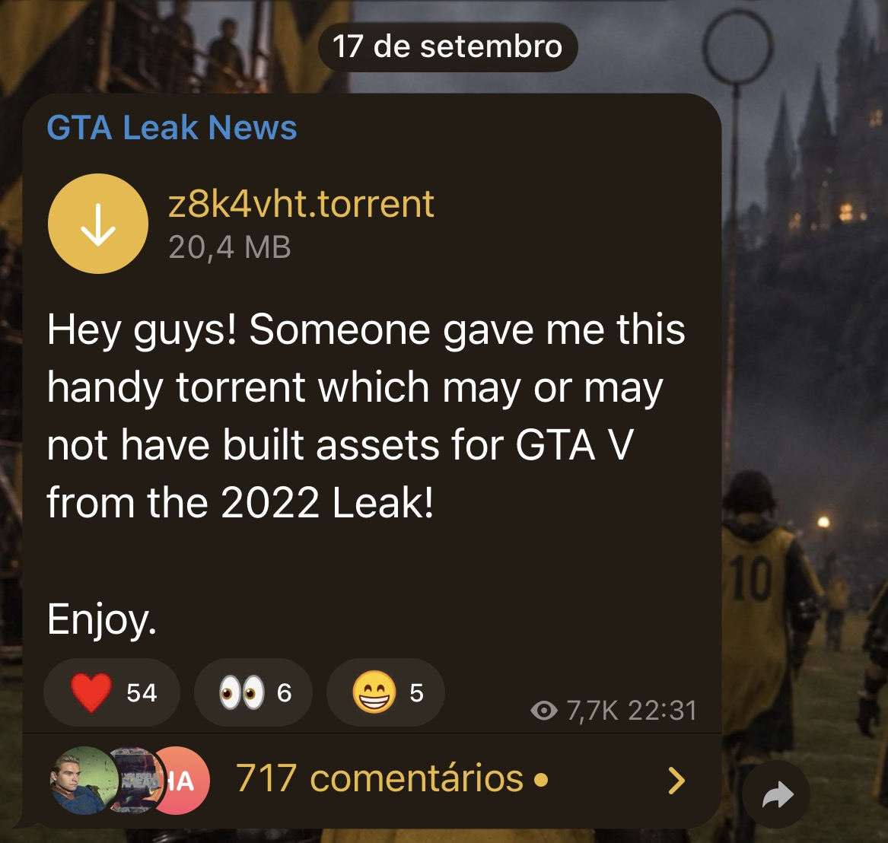

O que vazou e quando?
Atualizado em .
Em setembro de 2026, a imprensa noticiou a circulação de aproximadamente 192 GB de arquivos internos da Rockstar, atribuídos ao ataque de 2022. Entre os conteúdos divulgados, um mapa antigo ambientado em Miami passou a ser apresentado por parte da comunidade como uma build beta de GTA VI de 2014/2015. Essas datas se referem à idade atribuída ao material, não ao momento em que ele se tornou público.
“Build beta” é o nome usado nas publicações. A cobertura descreve principalmente um protótipo de mapa importado por modders para GTA V. Isso não demonstra que tenha vazado uma versão completa e independente de GTA VI, com história, missões e sistemas finalizados.
A Tom’s Hardware relaciona o mapa ao desenvolvimento inicial de GTA VI. Já a VGTimes, após examinar parte do arquivo, diz que não conseguiu estabelecer essa ligação: identificou um nível de Miami de 2014/2015 em material de GTA V. Portanto, a atribuição ao novo jogo permanece disputada e sem confirmação específica da Rockstar nas fontes consultadas.
O que foi mostrado nas reconstruções?
Os exemplos abaixo são descritos pelo Portal Viciados, em 19 de setembro de 2026. São relatos sobre vídeos da comunidade, e não uma confirmação do conteúdo final de GTA VI.
| Elemento | O que aparece | Como interpretar |
|---|---|---|
| Vice Beach 2015 | Exploração a pé de avenidas costeiras, palmeiras, edifícios em formas básicas e veículos de teste. | Geometria inicial do cenário, conhecida como blockout, em uma adaptação para GTA V. |
| La Perle 2015 | Percurso de carro por vias asfaltadas, viadutos e linhas ferroviárias elevadas. | Nome atribuído ao local nas publicações dos fãs; não confirma uma região final do jogo. |
| Condução e exploração | Carros circulando pelo mapa importado e personagens caminhando pelo cenário. | A execução dentro de GTA V usa recursos desse jogo; não comprova a jogabilidade nativa de GTA VI em 2014. |
| Interface personalizada | Uma das demonstrações combina o cenário com um HUD inspirado em GTA VI. | O HUD foi acrescentado por um modder, não deve ser apresentado como a interface original do protótipo. |
A aparência incompleta desses cenários é compatível com testes de construção de um mapa. Os vídeos não permitem concluir quais locais, veículos ou recursos chegaram à versão final.
Imagem da publicação compartilhada

O próprio texto da mensagem expressa incerteza sobre o conteúdo. A captura registra a alegação e sua circulação; não autentica os arquivos, nem comprova sua ligação com GTA VI. O tamanho exibido é o do arquivo torrent, não necessariamente o dos dados citados na imprensa.
Vídeo sobre a build beta
Assistir ao vídeo diretamente no YouTube, caso a incorporação esteja indisponível.
O conteúdo completo deste vídeo não pôde ser conferido nesta atualização. As descrições desta página se apoiam nas reportagens listadas abaixo.
Linha do tempo do material
- 2014/2015: período atribuído ao mapa antigo pela cobertura; sua ligação com GTA VI é contestada.
- 2022: ataque à Rockstar ao qual as reportagens associam a origem dos arquivos.
- 17 de setembro, ano não visível: data mostrada na captura do canal GTA Leak News.
- 18 de setembro de 2026: circulação do pacote de aproximadamente 192 GB e relatos de importação do mapa para GTA V.
- 19 de setembro de 2026: cobertura dos tours identificados como Vice Beach e La Perle.
Fontes e leituras
- Portal Viciados — reconstrução do protótipo dentro de GTA V (18/09/2026).
- Portal Viciados — tours por Vice Beach e La Perle (19/09/2026).
- Tom’s Hardware — cobertura internacional do pacote de 192 GB.
- VGTimes — análise dos arquivos e ressalva sobre a atribuição do mapa a GTA VI.
Este vazamento é o mesmo caso CyberLeek?
Esta página aborda arquivos antigos associados ao ataque de 2022 e divulgados em setembro de 2026. O caso CyberLeek tem uma cobertura própria na página sobre o vazamento de 2026. As fontes citadas aqui não permitem atribuir este pacote ao CyberLeek.